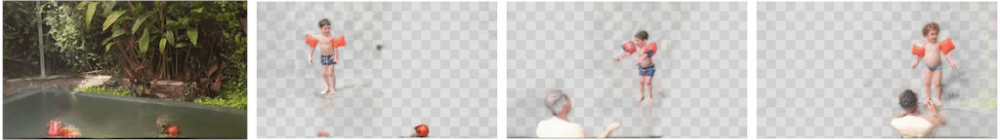
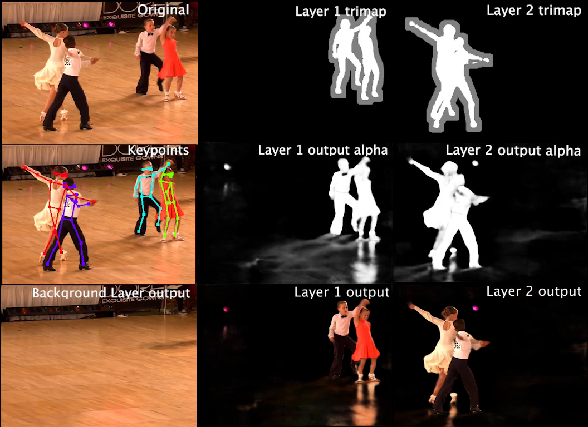

|
||
| Original Video (Jump separately) |
Our Retimed Result (Jump together!) |
|
Making all children jump into the pool together — in post-processing! In the original video (left) each child is jumping into the pool at a different time. In our computationally retimed video (right), the jumps are aligned such that all the children jump together into the pool (notice that the child on the left remains unchanged in the input and output videos). In this paper, we present a method to produce this and other people retiming effects in natural, ordinary videos. |
|||
|  | |||
| Background Layer | Layer 1 | Layer 2 | Layer 3 |
Decomposing a video into layers. Our method is based on a novel deep neural network that learns a layered decomposition of the input video. Our model not only disentangles the motions of people in different layers, but can also capture the various scene elements that are correlated with those people (e.g., water splashes as the children hit the water, shadows, reflections). When people are retimed, those related elements are automatically retimed with them, which allows us to create realistic and faithful re-renderings of the video for a variety of retiming effects. |
|||
Abstract
Generating free-viewpoint videos is critical for immersive VR/AR experience but recent neural advances still lack the editing ability to manipulate the visual perception for large dynamic scenes. To fill this gap, in this paper we propose the first approach for editable photo-realistic free-viewpoint video generation for large-scale dynamic scenes using only sparse 16 cameras. The core of our approach is a new layered neural representation, where each dynamic entity including the environment itself is formulated into a space-time coherent neural layered radiance representation called ST-NeRF. Such layered representation supports fully perception and realistic manipulation of the dynamic scene whilst still supporting a free viewing experience in a wide range. In our ST-NeRF, the dynamic entity/layer is represented as continuous functions, which achieves the disentanglement of location, deformation as well as the appearance of the dynamic entity in a continuous and self-supervised manner. We propose a scene parsing 4D label map tracking to disentangle the spatial information explicitly, and a continuous deform module to disentangle the temporal motion implicitly. An object-aware volume rendering scheme is further introduced for the re-assembling of all the neural layers. We adopt a novel layered loss and motion-aware ray sampling strategy to enable efficient training for a large dynamic scene with multiple performers, Our framework further enables a variety of editing functions, i.e., manipulating the scale and location, duplicating or retiming individual neural layers to create numerous visual effects while preserving high realism. Extensive experiments demonstrate the effectiveness of our approach to achieve high-quality, photo-realistic, and editable free-viewpoint video generation for dynamic scenes.
Paper
 |
Layered Neural Rendering for Retiming People in Video |
Supplementary Material
|  |
Code
|
[code] |
Acknowledgements. The original "Ballroom" video belongs to Desert Classic Dance. This work was funded in part by the EPSRC Programme Grant Seebibyte EP/M013774/1.